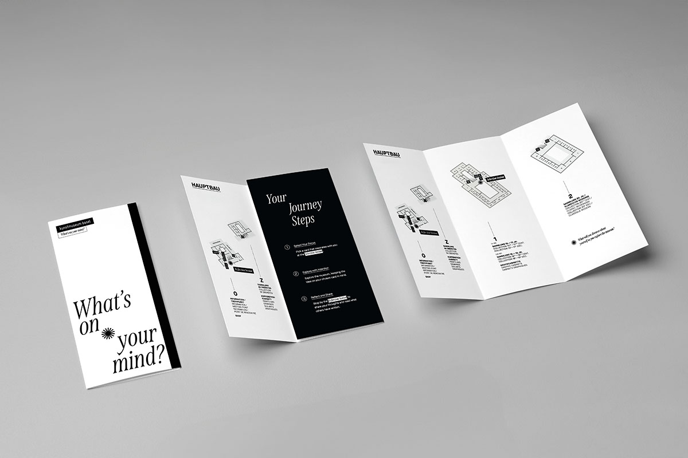
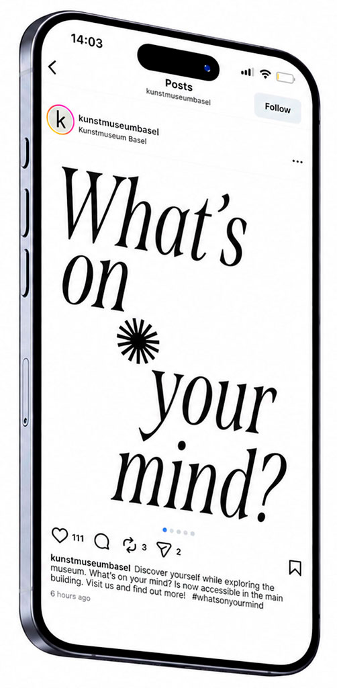
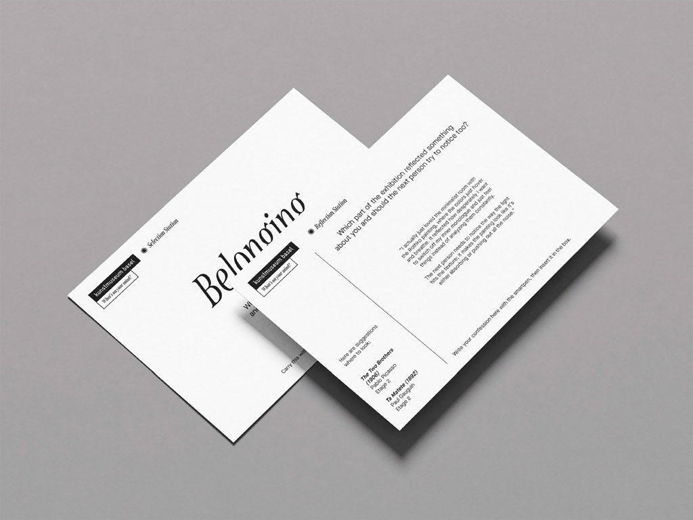
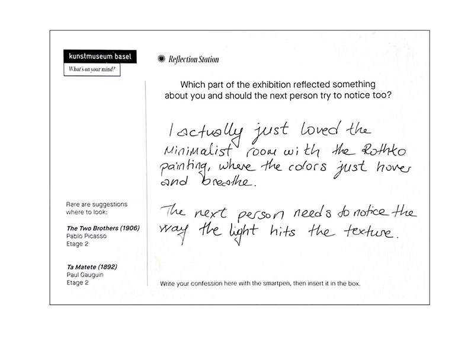
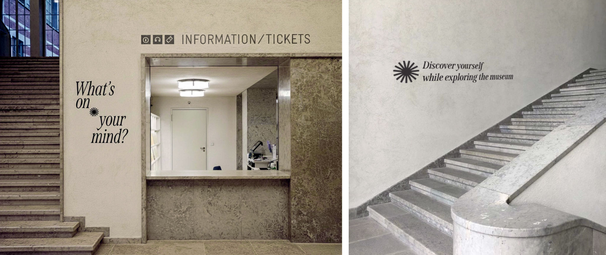

INFO
Addressing the emotional distance between visitors and classical art, this project introduces a reflective journey that shifts the focus from academic history to personal connection. By asking the quiet question, “What’s on your mind?”, we invite visitors to navigate the collection through thematic lenses like Belonging or Desire, transforming a prestigious institution into a space for self-discovery.
The experience culminates in a design intervention where visitors use smart pens to digitize their thoughts and a "leave a word, take a word" machine to swap anonymous reflections with others. This system bridges the gap between the artwork and the individual, turning a passive museum visit into a meaningful, shared human experience.
CREDITS
Concept, design and evaluation: Lucie Lin / Angelica Bebing
Concept and evulation: Thondup Retzke / Zejnep Islami Aliji / Angelica Morais
This is an academic project developed in collaboration with FHNW; all concepts are for educational purposes and remain the intellectual property of the creators.




